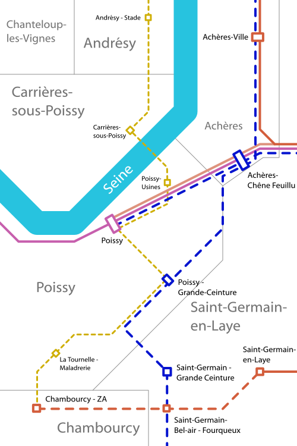

Poissy
Communes de Achères, Carrières-sous-Poissy, Chambourcy, Poissy, Saint-Germain-en-Laye


La ville de Poissy constitue un pôle important des Yvelines. A l'origine, son importance était donnée par les usines Tablot implantée sur la commune, elle accueille maintenant de plus en plus d'entreprises du secteur tertiaire.
Le centre-ville de la commune connait de gros problèmes de congestion de la circulation et s'y déplacer y est très difficlie en voiture comme en bus.
Le développement de l'agglomération se fait actuellement sur l'autre rive de la Seine à Carrières-sous-Poissy mais ce pôle semble souffrir partiellement de l'ombre de l'agglomération de Cergy-Pontoise, plus attractive probablement grâce à une urbanisation mieux planifiée.
Pour palier à ces problèmes de déplacement au centre-ville et pour créer une nouvelle dynamique urbaine, le Plan Ile-de-France propose la création de la ligne 1 du Cergyval qui connecterait les hauteurs de Poissy à sa gare centrale et relierait Poissy à Cergy via Vauréal. La ligne 1 du Cergyval permettrait en plus de relier la gare principale de Poissy à la gare grande ceinture qui sera desservie par la future tangentielle Yvelines.
Carte
{kind=link}

Cliquer pour agrandir